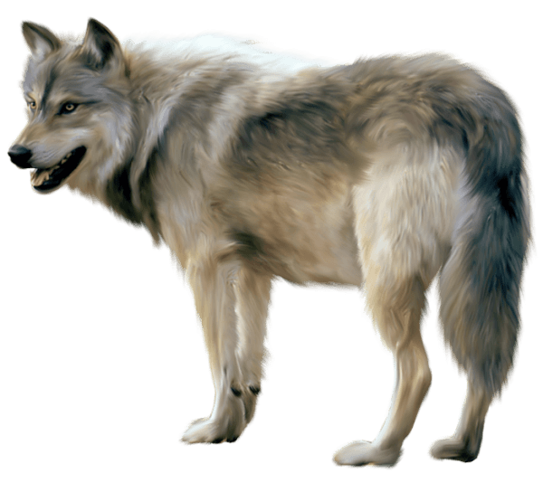

Descripcion:
Mamífero cánido de menos de un metro de longitud, incluida la cola, de hocico alargado
y orejas empinadas, pelaje de color pardo rojizo y muy espeso, especialmente en la cola,
de punta blanca. Es de costumbres crepusculares y nocturnas; abunda en España y caza con
gran astucia toda clase de animales, incluso de corral.
Caracteristicas:
- Los zorros son nocturnos, lo que significa que normalmente están despiertos por la noche.
- Los zorros pueden correr hasta 30 millas por hora.
- Los zorros viven en guaridas en la tierra o en árboles viejos.
- Los zorros tienen pequeños estómagos, por lo que comen pequeñas cantidades durante el día. Ellos comen casi cualquier cosa.
- Cuando están muy aburridos, los zorros a veces atrapan ratones solo para jugar con ellos, en lugar de comérselos.
Descripcion:
Los tigres son los más emblemáticos de los grandes felinos. Su hermoso pelaje negro y
anaranjado, además de sus largos bigotes blancos, son fuente de admiración e inspiración
para muchos. Pero a pesar de ser tan venerados, también son vulnerables a la extinción.
Caracteristicas:
- Los tigres son los felinos más grandes y más fuertes del mundo.
- El tamaño y fuerza del tigre le ayudan a cazar las presas más grandes, como ciervos y piezas de ganado.
- Los tigres tienen el sentido de la vista y el oído muy desarrollando. Cazan de noche y pueden ver seis veces más que los seres humanos cuando la luz es tenebrosa.
- Las mandíbulas o quijadas del tigre ejercen una fuerte presión y sus colmillos pueden llegar a medir de hasta 9 o 10 cm.
- Los ojos brillan en la oscuridad porque reflejan la luz que los alumbra, por muy poca que haya.
Descripcion:
Este felino es el llamado "tigre de América", por ser el más grande que habita en el continente.
Su aspecto general es tosco y macizo; un jaguar adulto puede medir entre 1.12 y 1.85 m de largo,
sin incluir la cola, la cual oscila entre 45 y 75 cm de longitud, y alcanza 60 cm a la altura de la cruz.
Caracteristicas:
- Los jaguares poseen un color de ojos amarillento y unas orejas muy pequeñas y redondeadas.
- Estos animales son excelentes nadadores, por lo que siempre buscan instalarse en zonas cercanas al agua.
- Su peso es muy variado, por lo que podemos encontrar ejemplares desde 56 kg hasta 96 kg.
- Se le conoce como pantera negra y su color es producido por un exceso de melanina en su cuerpo que lo hace más oscuro.
- Su larga cola puede llegar a medir de 45cm a 75 cm.

Descripcion:
Su pelo es abultado de color gris y de color óxido, a menudo con patrones faciales distintivos.
Tienen cabezas grandes con hocicos gruesos, colas espesas, patas de gran tamaño, y las piernas
largas. Los lobos son conocidos por su agudo sentido del olfato, excelente oído, y visión binocular.
Los lobos grises mexicanos son los más pequeños de todas las subespecies de lobos grises en América del Norte.
Caracteristicas:
- Una musculatura más poderosa que le permite alcanzar grandes velocidades.
- Unas extremidades anteriores algo más largas que las posteriores, agilizando así su movimiento.
- Orejas normalmente ovaladas.
- Dientes de mayor tamaño para desgarrar a grandes presas.
- Hocicos más alargados.
Descripcion:
Los osos polares están clasificados como mamíferos marinos porque pasan la mayor parte de su vida en
el hielo marino del océano Ártico. Cuentan con una gruesa capa de grasa corporal y un recubrimiento a
prueba de agua que los aísla del aire y el agua fría.
Caracteristicas:
- Nombre Cientifico: Ursus maritimus.
- Peso: 800–1,300 libras (360-590 kg).
- Longitud: 6–9 pies (1.8-2.7 m).
- Su principal fuente de alimento son las focas
- Su cabeza es de gran tamaño, orejas pequeñas, redondeadas y erectas, ojos pequeños, un cuerpo pesado, robusto y una cola corta